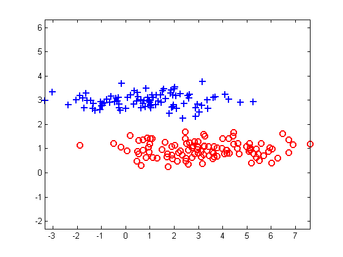
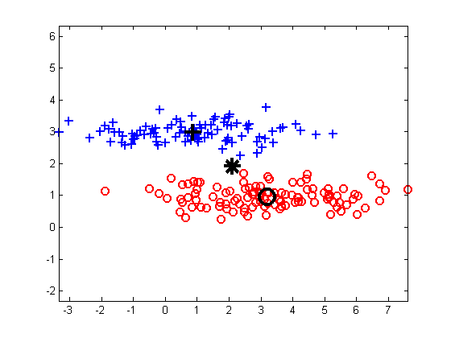
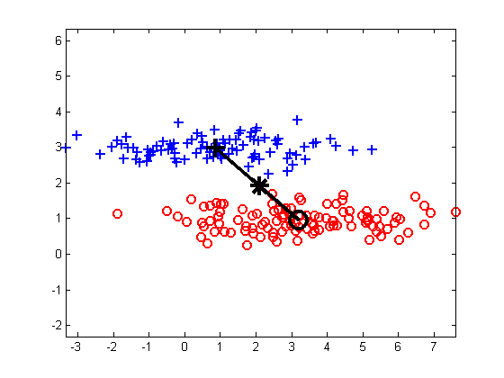
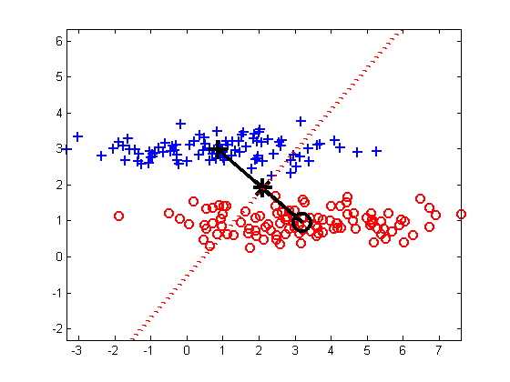
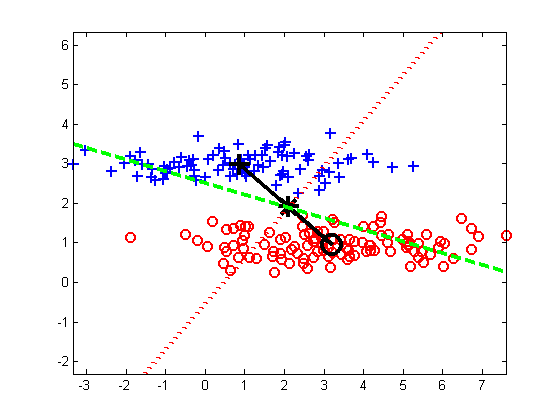
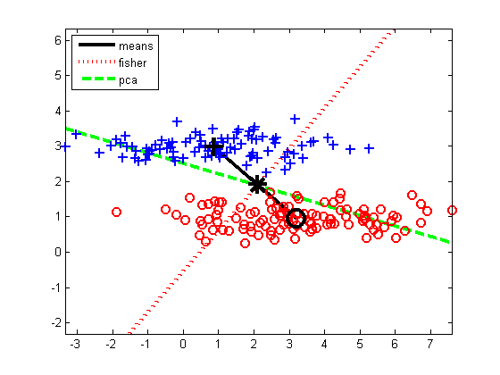
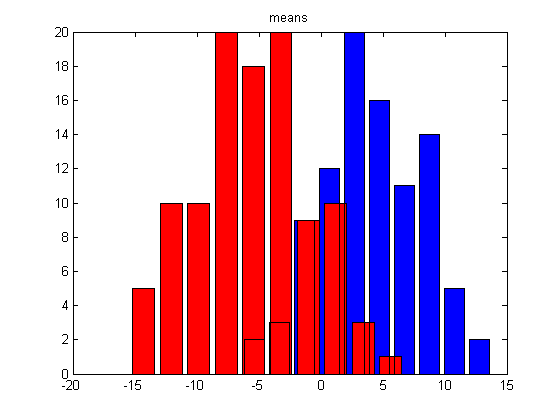
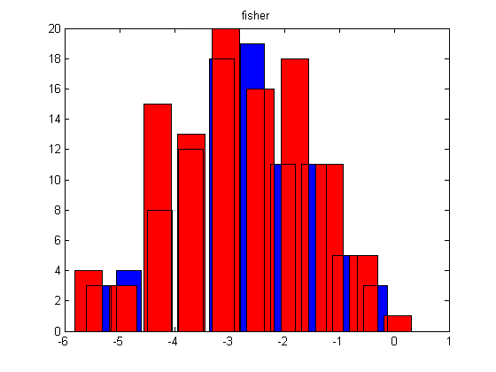
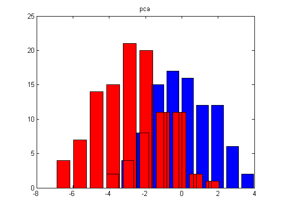

Compare the class separations induced by PCA and Fisher LDA respectively.
Contents
function fisherLDAdemo()
Generate data
setSeed(0);
mu = [1 3; 3 1];
Sigma = repmat([4 0.01; 0.01 0.1], [1, 1, 3]);
mixweight = [0.5 0.5];
nsamples = 200;
[X, Y] = mixGaussSample(mu, Sigma, mixweight, nsamples);
maleNdx = (Y == 1);
femaleNdx = (Y == 2);
Plot data
figure;
plot(X(maleNdx, 1), X(maleNdx, 2), ...
'b+', 'MarkerSize', 8, 'linewidth', 1.5);
hold on
plot(X(femaleNdx, 1), X(femaleNdx, 2), ...
'ro', 'MarkerSize', 8, 'linewidth', 1.5);
axis equal

Plot means
muMale = mean(X(maleNdx, :));
muFemale = mean(X(femaleNdx, :));
plot(muMale(1) , muMale(2) , 'k+', 'markerSize', 15, 'linewidth', 3)
plot(muFemale(1), muFemale(2), 'ko', 'markerSize', 15, 'linewidth', 3)
mu = mean(X);
plot(mu(1), mu(2), 'k*', 'markerSize', 15, 'linewidth', 3)

Calculate projections
wMean = (muMale - muFemale)';
wFisher = fisherLdaFit(X,Y);
[wPCA] = pcaPmtk(X, 1);
Plot a line between the means
h1 = line([muMale(1) muFemale(1)], [muMale(2) muFemale(2)]);
set(h1,'linewidth',3, 'color', 'k');

Plot the LDA projection
s = 50;
h2=line([mu(1)-s*wFisher(1) mu(1)+s*wFisher(1)], ...
[mu(2)-s*wFisher(2) mu(2)+s*wFisher(2)]);
set(h2, 'color', 'r', 'linewidth', 3, 'linestyle', ':',...
'YLimInclude', 'off', 'XLimInclude', 'off')

Plot the PCA projection
s = 50;
h3=line([mu(1)-s*wPCA(1) mu(1)+s*wPCA(1)],...
[mu(2)-s*wPCA(2) mu(2)+s*wPCA(2)]);
set(h3, 'color', 'g', 'linewidth', 3, 'linestyle', '--',...
'YLimInclude', 'off', 'XLimInclude', 'off')

uistack(h1, 'bottom');
uistack(h2, 'bottom');
uistack(h3, 'bottom');
str = {'means', 'fisher', 'pca'};
legend([h1 h2 h3],str, 'location', 'northwest')
printPmtkFigure fisherLDAdemoData;

Project the data
XprojMean = X*wMean;
XprojFisher = X*wFisher;
XprojPCA = X*wPCA;
Show histograms of the projected data
figure;
plotData(XprojMean, maleNdx, femaleNdx, str{1});
printPmtkFigure fisherLDAdemoProjMean;
figure;
plotData(XprojFisher, maleNdx, femaleNdx, str{2});
printPmtkFigure fisherLDAdemoProjFisher;
figure
plotData(XprojPCA, maleNdx, femaleNdx, str{3});
printPmtkFigure fisherLDAdemoProjPCA;
end
function plotData(Xproj, maleNdx, femaleNdx, ttl)
Subfunction to plot histograms of the projected data
[nMale, xMale] = hist(Xproj(maleNdx));
bar(xMale, nMale, 'b')
[nFemale, xFemale] = hist(Xproj(femaleNdx));
hold on
bar(xFemale, nFemale, 'r')
title(ttl)
  
end